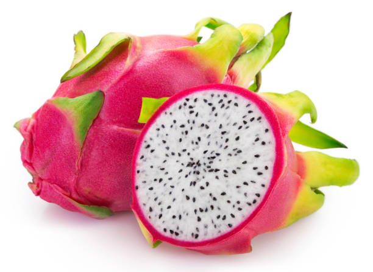

Freshness You Can Trust

Dragon Fruit is a tropical fruit that belongs to the cactus family. It is known for its bright pink or yellow skin and white or red flesh filled with tiny black seeds. Dragon fruit is rich in vitamin C, fiber, antioxidants, magnesium, and iron, making it a highly nutritious fruit. It helps improve digestion, boosts the immune system, supports heart health, promotes healthy skin, and keeps the body hydrated. Its mildly sweet taste and low-calorie content make it an excellent choice for a healthy diet.